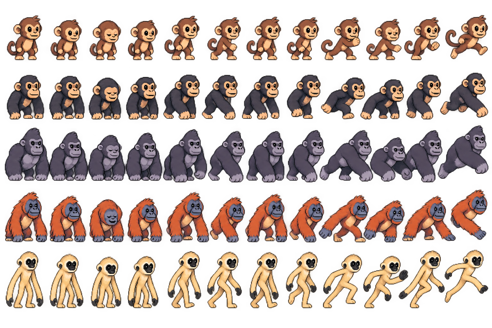
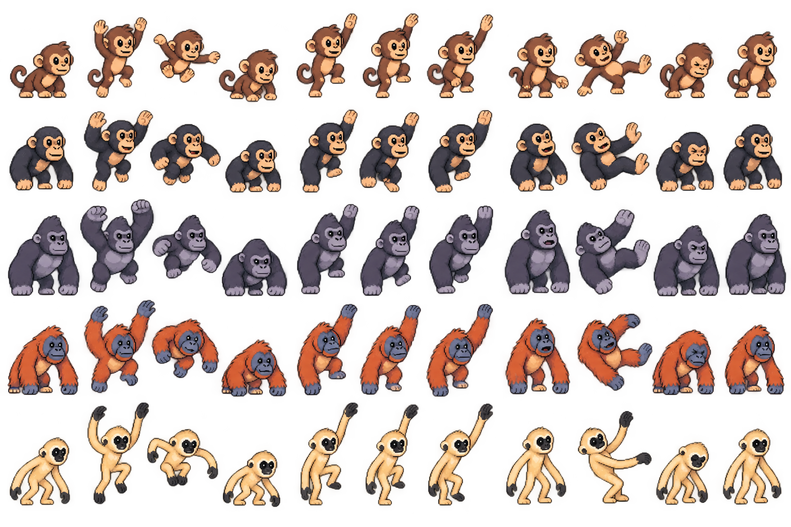
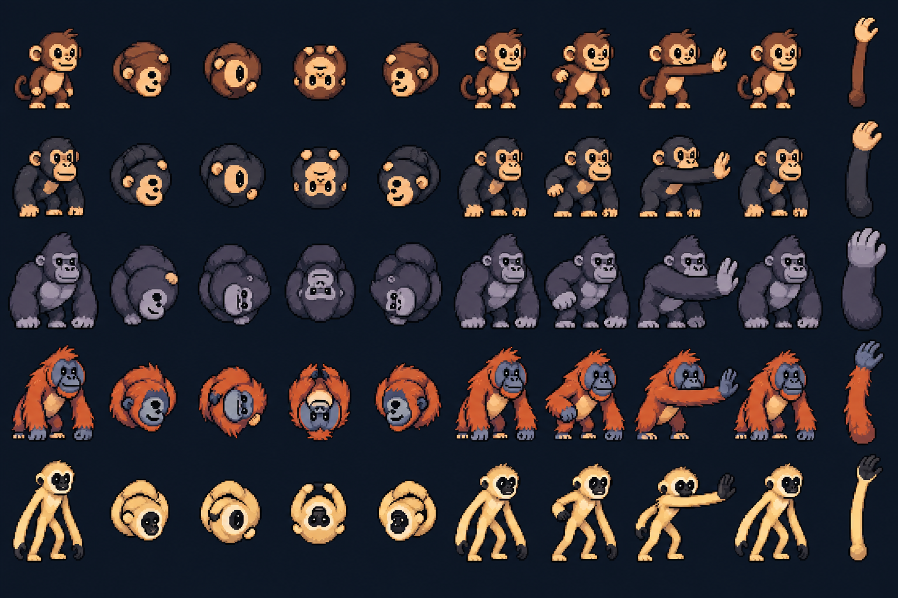

CHARACTER DESIGNS LOCKEDPrimate animation pack
Five distinct primates. New movement and reaction studies alongside the approved roll, slap and modular arms.
Prototype playback uses approximate crops. Sheets retain generated backgrounds and require pivot alignment, transparent exports and in-between polish before engine import. Climb has three distinct poses with the middle pose repeated on return.
Design lock · Frame map · Generation prompts
Idle, walk and run sheet

Jump, climb and hit reaction sheet

Approved character reference
